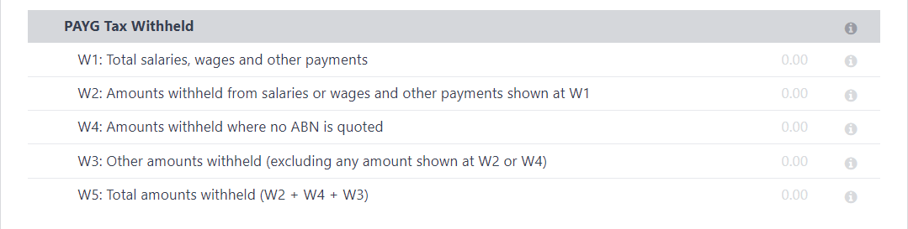
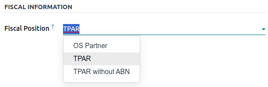
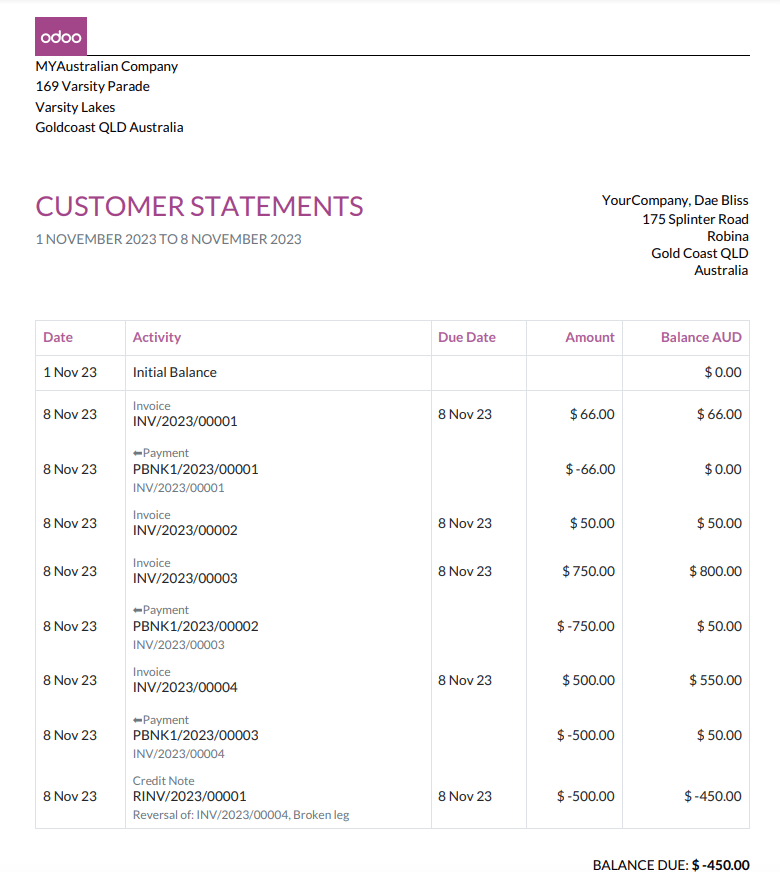
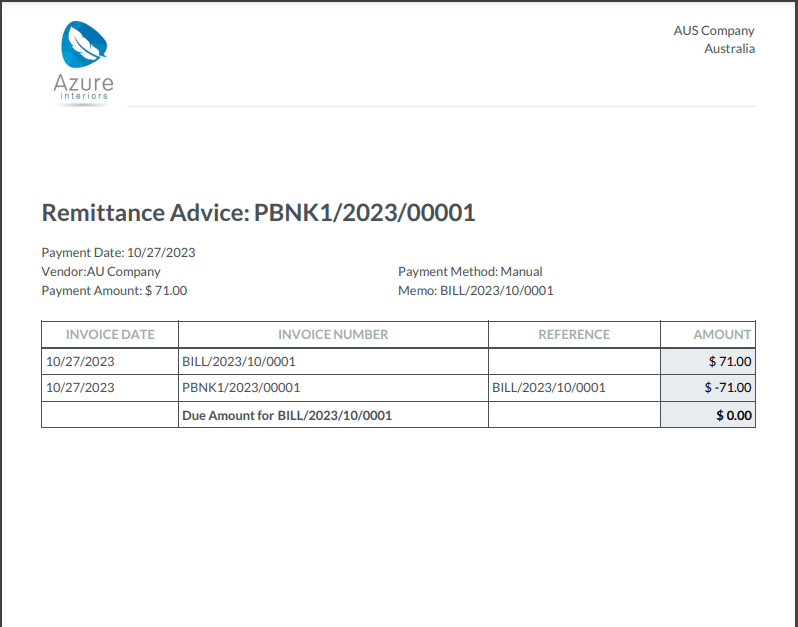
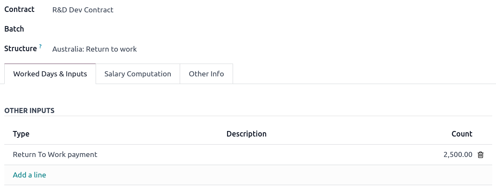
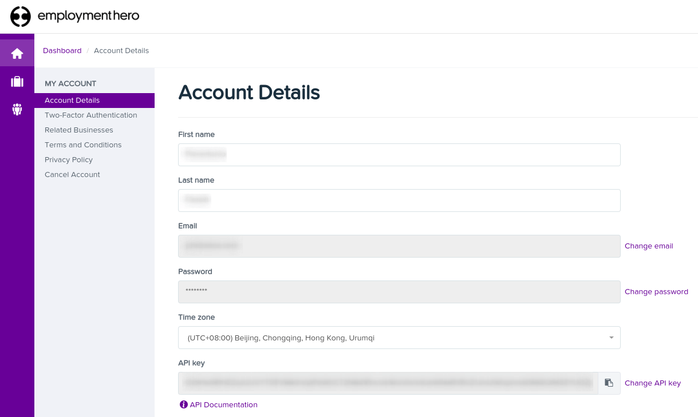

澳大利亚¶
配置¶
模块名 |
模块密钥 |
描述 |
|---|---|---|
澳大利亚 - 会计 |
|
当会计 财务本地化 包设置为 澳大利亚 时默认安装。该模块还安装了 ABA 信用转账 和 汇款通知报告 模块。 |
澳大利亚报告 - 会计 |
|
包括 纳税支付年度报告（TPAR） 和 BAS 报告。 |
澳大利亚 - 薪资单 |
|
澳大利亚薪资单本地化。 |
Australia - Payroll with Accounting |
|
安装澳大利亚薪资单和会计之间的链接。该模块还安装：澳大利亚 - 会计；澳大利亚报告 - 会计；以及:guilabel: |
会计客户报表 |
|
允许管理和发送来自合作伙伴分类账和联系表的客户月度报表。也用于新西兰。 |
Employment Hero 澳大利亚薪资单 |
|
将 Employment Hero 中的所有工资流水与 Odoo 日记账条目同步。 |
会计科目表¶
澳大利亚会计科目表包含在**澳大利亚 - 会计**模块中。进入 访问。
参见
Taxes and GST¶
The default Australian taxes impact the BAS Report, which can be accessed through .
In Australia, the standard Goods and Services Tax (GST) rate is 10%, but different rates and exemptions exist for specific categories of goods and services.

税项映射¶
在澳大利亚本地化包中，税收名称将税率作为其命名惯例的一部分。
尽管 Odoo 的税收金额很高，但这些税收非常相似（主要为0% 和 10%），对以下方面有不同的税率格局变化：
货物
服务
应纳税额年度报告（TPAR）
没有澳大利亚商业登记号码的 TPAR
参见
提及 TPAR 的稅项，不仅影响 BAS 报告，也影响 TPAR 报告。某些行业的企业需要报告在财政年度内，向相关服务的分包商支付的款项。Odoo 结合使用税收和财务规则，在 TPAR 报告中汇报这些付款。至于提及 没有 TPAR 的税项，则用于记录为 ATO 预扣、没有 ABN 的分包商的金额。
参见
以下是 Odoo 17 中澳大利亚的税项。
GST 名称 |
描述 |
GST 范围 |
GST 类型 |
|---|---|---|---|
10% |
GST 采购 |
采购 |
|
10% INC |
GST 包括采购 |
采购 |
|
10% C |
资本采购 |
采购 |
|
0% C |
零税率采购 |
采购 |
|
100% T EX |
采购（应税进口）- 单独缴税 |
采购 |
|
10% I |
进项税额销售的采购 |
采购 |
|
10% P |
自用或不可抵扣的采购 |
采购 |
|
100% EX |
只对进口项目征收商品及服务税 |
采购 |
|
10% Adj |
税务调整（采购） |
采购 |
|
10% |
GST 销售 |
销售 |
|
10% INC |
GST 包括销售 |
销售 |
|
0% EX |
零税率（出口）销售 |
销售 |
|
0% EXEMPT |
豁免销售 |
销售 |
|
0% I |
进项税额销售 |
销售 |
|
10% Adj |
Tax Adjustments (Sales) |
销售 |
|
10% TPAR |
GST 采购 |
服务 |
采购 |
10% TPAR NO ABN |
GST 采购 |
服务 |
采购 |
10% INC TPAR |
GST 包括采购 |
服务 |
采购 |
10% INC TPAR N ABN |
GST 包括采购 |
服务 |
采购 |
10% C TPAR |
资本采购 |
服务 |
采购 |
10% C TPAR N ABN |
资本采购 |
服务 |
采购 |
0% C TPAR |
Zero Rated Purch TPAR |
服务 |
采购 |
0% C TPAR N ABN |
Zero Rated Purch TPAR without ABN |
服务 |
采购 |
100% T EX TPAR |
采购（应税进口）- 单独缴税 |
服务 |
采购 |
100% T EX TPAR N ABN |
采购（应税进口）- 单独缴税 |
服务 |
采购 |
10% I TPAR |
进项税额销售的采购 |
服务 |
采购 |
100% I TPAR N ABN |
进项税额销售的采购 |
服务 |
采购 |
10% P TPAR |
自用或不可抵扣的采购 |
服务 |
采购 |
10% P TPAR N ABN |
自用或不可抵扣的采购 |
服务 |
采购 |
100% EX TPAR |
只对进口项目征收商品及服务税 |
服务 |
采购 |
100% EX TPAR N ABN |
只对进口项目征收商品及服务税 |
服务 |
采购 |
10% Adj TPAR |
税务调整（采购） |
服务 |
采购 |
10% Adj TPAR N ABN |
税务调整（采购） |
服务 |
采购 |
47% WH |
Tax Withheld for Partners without ABN |
服务 |
采购 |
BAS 报告¶
**商业活动报表（BAS）**报告是在澳大利亚注册**商品和服务税（GST）**的企业的一项重要报税要求。**BAS**用于向**澳大利亚税务局（ATO）**报告和缴纳各种税款。利用 Odoo 的**BAS**功能，企业可以报告以下内容：
商品及服务税（GST）
PAYG tax withheld

商品及服务税的税款是从系统中预先配置的**税金网格**中收取的。也可手动设置**税金网格**，以收取任何额外的特殊消费税。一旦为每个账户设置了税金，系统会自动将日记账项目分类到正确的税金类别中。这可确保**BAS**报告准确无误地反映企业的财务活动。

此外，BAS**报告还包括**PAYG**税金代扣组成部分（**W1**到**W5，以及**摘要，第 4 节**）。这种整合确保了准确捕捉和反映报告中与工资单相关的代扣税金。
该模块包含内置规则，便于自动计算**W1**至**W5**类型的税款。有关这些税款计算过程的详细说明和更多信息，请参阅薪资应用程序文档。
参见
结算 BAS 报告¶
到了向**ATO**报税的时候，点击 结账分录。可以在 中配置报税周期。此外，还可通过**周期按钮**（用日历图标📅标记）定义报税周期的开始日期。
参见
注解
Odoo 使用*日历季度*而不是澳大利亚财政年度季度，这意味着**7 月至 9 月在 Odoo 中是第三季度**。
在首次关闭条目之前，需要设置默认的 GST 应付账款账户 和 GST 应收账款账户。系统会弹出通知，将用户重定向到税组配置。
一旦设置了**应交消费税**和**应收消费税**账户，**BAS**报告就会自动生成准确的分录结账分录，使消费税余额与消费税结算账户相平衡。

应收**商品及服务税**和应付**商品及服务税**之间的余额与税组定义的税款结算账户对账。支付给**ATO**或从**ATO**收到的金额可与银行对账单进行核对。

重要
BAS**报告不直接提交给**ATO。Odoo 可帮助您自动计算每个部分的必要数值，并可对其进行审核，以便更好地了解这些数字背后的历史。企业可以复制这些数值，并将其输入 ATO 门户网站<https://www.ato.gov.au/newsrooms/small-business-newsroom/lodging-your-next-bas>`_。
TPAR 报告¶
Odoo 允许企业报告在财政年度内向承包商或分包商支付的款项。具体做法是生成 TPAR（应税支付年度报告）。如果您不确定您的企业是否需要此报告，请参阅 ATO 提供的文档。您可以在 中找到该报告。
配置¶
在 或 下，选择一个承包商，并在 销售与采购 标签下设置 财政状况。
向财政状况设置为 TPAR 或 无 ABN 的 TPAR 的联系人付款时，报告将在 中自动生成。
报告包括分包商的**ABN**、商品及服务税总额、已付毛额**和**预扣税款。
商品及服务税总额：已付税款总额
已付毛额：账单登记付款后显示
预扣税款：如果分包商注册时的财政状况设置为 无 ABN 的 TPAR，则显示该税款。
TPAR 报告可导出为 PDF、XLSX 和 TPAR 格式。
客户对账单¶
客户对账单允许客户查看他们在一定时期内与公司的财务交易以及逾期账单的详细信息。这些对账单可以通过电子邮件发送给客户。
客户有**两种**方式下载这些对账单。
从联系表下载： 客户对账单在 下可找到。选择一个客户，点击 齿轮图标 (⚙)，然后点击 打印客户对账单。即可打印出从月初到当日的对账单。
从合作伙伴分类账下载： 该选项允许更灵活地选择对账单的开始和结束日期。您可以访问 。在此，在**日历菜单（📅）**中指定报表的日期范围，将鼠标悬停在合作伙伴上，然后点击:guilabel:`客户对账单`选项卡。

汇款通知单¶
汇款通知单是一份用于证明企业付款的文件。在 Odoo 中，进入 ，选择付款，然后点击 ，即可获得该文件。
通过 Peppol 开具电子发票¶
Odoo 符合澳大利亚和新西兰的 PEPPOL要求。您可以在 或 下找到并设置每个合作伙伴的**电子发票**设置，选择一个合作伙伴，然后点击 会计 选项卡。

重要
为 PEPPOL 网络上的合作伙伴验证发票或信用票据将下载一个符合要求的 XML 文件，该文件可手动上传到您的 PEPPOL 网络。
用于批量付款的 ABA 文件¶
介绍¶
ABA 文件是`澳大利亚银行家协会 <https://www.ausbanking.org.au/>`_ 开发的一种数字格式。该格式专为商业客户设计，方便他们通过商业管理软件上传单一文件进行批量支付处理。
使用 ABA 文件的主要优势在于提高付款和配对效率。这可以通过将大量付款合并到一个文件中进行批量处理来实现，该文件可以提交给所有澳大利亚银行。
配置¶
设置¶
要启用**批量付款**，请转至 并启用 允许批量付款。
银行日记账¶
然后，转至 并选择 银行 日记账类型。在 日记账分录 选项卡中，输入 账号 并单击 创建并编辑。在弹出窗口中，填写以下字段：
银行
账户持有人名称
BSB
账户持有人

重要
The 发送汇款 字段必须**启用**。
注解
:guilabel:`货币`字段是可选项。
返回 日记账分录 选项卡，填写以下与 ABA 相关的字段：
BSB：该字段由银行账户自动格式化
金融机构代码：金融机构的 3 个字母的官方缩写（例如，WBC 代表西太平洋银行）
供应用户名：由银行提供的 6 位数字。如需了解更多信息，请联系或访问银行网站。
- Include Self-Balancing Transactions: Selecting this option adds an additional
“self-balancing” transaction to the end of the ABA file, which some financial institutions require when generating ABA files. Check with your bank to see if you need this option.
Then, go to the Outgoing Payments tab on the same Bank type journal. Click Add a line and select ABA Credit Transfer as the payment method.
合作伙伴银行账户¶
转至 或 ，选择要添加银行信息的合作伙伴。选定后，点击:guilabel:`会计`选项卡，在:guilabel:`银行账户`部分，点击:guilabel:`添加行`进行填写：
:guilabel:该合作伙伴的`帐号`
银行
账户持有人名称
BSB
账户持有人
Send Money defines the bank account as trusted, which is essential for ABA files and must be enabled if to be used.
生成 ABA 文件¶
要生成**ABA**文件，:guilabel:`创建`供应商账单（手动或根据采购订单创建）。 :guilabel:`确认`账单，并确保供应商的银行信息设置正确，然后登记付款。
Next, click Register Payment in the pop-up window: select the Bank journal, select ABA Credit Transfer as Payment Method, and select the right Recipient Bank Account.
付款一经确认，就会出现在 中。勾选要纳入批次的付款，然后点击 创建批次。确认所有信息正确无误，最后点击 验证。验证完成后，ABA 文件就会出现在右侧的**沟通栏**中。
After uploading it to your bank’s portal, an ABA transaction line will appear in your bank feed at the following bank feed iteration. You will need to reconcile it against the batch payment made in Odoo.
参见
立即购买，稍后付款解决方案¶
“立即购买，稍后付款” 解决方案是澳大利亚电子商店常见的付款方式。其中一些解决方案可通过 `Stripe <https://stripe.com/en-au/payments/payment-methods>`_和 `AsiaPay <https://www.asiapay.com.au/payment.html#option>`_支付提供商获得。
澳大利亚 POS 终端¶
在澳大利亚，如果您希望在 Odoo 和 PoS 终端之间建立直接连接，您*必须*拥有**Stripe**终端。Odoo 在澳大利亚支持**EFTPOS**支付解决方案。
注解
使用 Odoo 作为主要 PoS 系统时，您不需要 Stripe 支付终端。不使用 Stripe 的唯一缺点是收银员必须在终端上手动输入最终付款金额。
参见
Stripe Odoo 付款终端
工资¶
重要
Odoo 目前不符合 STP 第 2 阶段的要求。
创建您的员工¶
要创建**员工表单**并填写必填信息，请转至**员工**应用程序并点击 创建。在 HR 设置 选项卡中，您可以输入必填信息：
TFN 状态：如果员工提供了 TFN，请确保将其添加到 “TFN” 字段中。
非居民：如果员工是外国居民
免税阈值：如果员工低于或高于阈值
HELP / STSL：用于所有类型的学习和培训支持贷款（如 HELP、VSL、SSL…）
医疗保健税扣除
医疗保健税豁免
额外薪酬代扣
…
管理澳大利亚合同¶
创建雇员表单后，点击 合同 智能按钮或进入 ，确保启用合同。
注解
每名员工只能同时激活一份合同，但员工在受雇期间，可以为员工分配连续合同。
与澳大利亚有关的合同信息可在以下**三个**地方找到：
在为合同指定薪资金额、薪资频率和其他重要细节之前，定义**薪资结构**、开始日期**和**工作入职**来源非常重要。在澳大利亚，根据澳大利亚税务局（ATO）的规定，采用 “薪资结构” 来指定适用于该合同的税率表。大多数合同属于以下**三种结构：
常规（附表 1）：绝大多数澳大利亚员工都属于这一类；因此，所有合同都默认采用这种结构。
Working holiday makers (Schedule 15). When employing working holiday makers (WHMs), other taxes apply. For detailed information on these specific tax implications, refer to the documentation provided by the ATO.
无 TFN。如果员工超过**28**天未提供**TFN**，请选择此结构。

重要
The structures Horticulture/Shearing (Schedule 2) and Artists and Performers (Schedule 3) are only partially complete, and proper tests should be performed before using them to pay employees in your production database. Send your feedback to au-feedback@mail.odoo.com.
The field Work Entry Source is also significant and defines how working hours and days are accounted for in the employee’s payslip.
guilabel:
工作时间表：根据员工的工作时间表自动生成工作条目，从合同的开始日期开始计算。例如，假设一个员工每周工作 38 小时，合同从 1 月 1 日开始。今天是 1 月 16 日，用户从 1 月 14 日到 20 日生成了一次支付流程。如果没有休假，薪资单上的工作小时数将自动计算为 38 小时（5 * 7.36小时）。Attendances: The default working schedule is ignored, and work entries are only generated after clocking in and out of the attendance app.
Planning: The default working schedule is ignored, and work entries are generated from planning shifts only.
重要
Additional configurations are necessary to ensure that Odoo’s payslips automatically compute various penalty rates as defined by an award (overtime rate, public holiday rate, etc). To create these configurations, create new work-entry types for each penalty rate and then assign a penalty rate in % to each. Once this one-time configuration is done, work entries can be manually imported for each period, and Odoo will separate the pay items and rates on the employee’s payslip.
重要
Timesheets do not impact work entries in Odoo.
:guilabel:`薪资信息`选项卡包含一些对 Odoo 中支付流程频率和工资单规则管理产生重要影响的字段。
Wage Type: Select the Fixed Wage pay type for full-time and part-time employees. For casual workers and other Hourly Wage type. For employees being paid hourly, make sure to define the correct casual loading.
Schedule Pay: In Australia, only the following pay run frequencies are accepted: daily, weekly, bi-weekly (or fortnightly), monthly, and quarterly.
Wage (/period): Assign a wage to the contract according to their pay frequency. On payslips, the corresponding annual and hourly rates will be automatically computed.
注解
对于按小时计酬的员工，请注意小时工资应不包括临时工加薪费。
:guilabel:`澳大利亚`选项卡。此选项卡中的大部分字段用于**一键薪酬支付系统**（STP）报告，这需要全面了解员工合同中的若干细节。在进行薪资运行之前，请查看此选项卡上的信息。这包括以下**四个**字段，它们会影响薪资单的计算：
预扣税额变动：如果员工的预扣税额必须根据其情况向上或向下变动，则使用此字段。例如，如果员工 X 受益于 25% 的预扣税款变化，那么他们的预扣税款比例将从根据其工资结构和情况应支付的金额变化为固定的 25%。
休假津贴：如果员工享受常规的休假津贴，则在休年假或长期服务假时，将在:guilabel:
假期加载率字段中设置的值（如 17.5%）将被加到任何获得的金额上。guilabel:
薪酬牺牲养老金：在计算工资总额之前，添加到此字段中的任何金额都会按发薪频率从员工的基本工资中扣除。然后，将此金额添加到薪资单的超级担保行中。例如，如果员工 Y 每月收入 5000 澳元，并为养老金牺牲了 300 澳元，那么他们的净工资总额为 4700 澳元，300 澳元将被添加到正常的养老金缴款之上。其他薪资牺牲：在计算薪资总额之前，添加到此字段中的任何金额都将按发薪频率从员工的基本薪资中扣除。
Once all important information has been entered, ensure the transition of the contract’s status from “New” to “Running” to facilitate its use in pay runs.

Assign superannuation accounts¶
Upon receipt of superannuation details from a new employee, ensure the creation of a new account in to link it to the employee. Input the Super Fund, Member Since date, and TFN number of the employee.
Suppose the employee uses a superannuation fund that does not exist in the database yet. In that case Odoo creates a new one and centralises basic information about this fund, such as its ABN, address, type (APRA or SMSF), USI, and ESA. Super funds can be created or imported in .
重要
Odoo is currently not SuperStream-compliant.
Create pay runs with payslips¶
Odoo can create pay runs in two ways: via batch or via individual payslips.
Create a batch of payslips¶
准备生成员工的工资单草稿时（例如，每周、每两周或每月末），导航到 ，然后点击 新建。填写必要信息，点击:guilabel:生成工资单，选择:guilabel:工资结构、部门、员工，然后点击:guilabel:生成。此方法允许在一个批次中创建每个雇员对应的多份工资单。
为批次命名。(例如，
2024 – 每周 W1）。选择薪资运行的开始和结束日期。(例如：01/01/2024 至 07/01/2024）
点击 生成。弹出窗口要求确认批次中应包括哪些员工。默认情况下，所有在职员工都包括在内。您可以将 薪资结构 字段留空，因为 Odoo 会自动选择与每个员工的合同相关联的结构。
批次将根据员工的数量创建相同数量的工资单。在一个批次中创建的工资单数量没有限制。
核实每张工资单上的重要信息。批量生成工资单后，无需手动计算工资单行数，Odoo 会为您完成这项工作。
创建个人工资单¶
工资发放不符合常规工资单的情况下，可以选择创建专门用于单个员工的工资发放。前往:menuselection:薪资单 -> 工资单 -> 所有工资单，然后点击:guilabel:新建。在为员工处理**一次性付款**，包括**重返工作岗位**付款（ATO Schedule 4），**离职付款**（ATO Schedule 7 和 11），以及**佣金和奖金**（ATO Schedule 5））时，采用此方法。在生成单个工资单时，请确保按照以下步骤进行：
Select an Employee; their Contract will be filled out automatically
Add a pay Period
选择工资 :guilabel:`结构`（例如，重返工作岗位付款）
Unlike payslips generated from a batch, the payroll user must click the Compute Sheet button to generate payslip lines

了解工资单功能¶
无论以何种方式创建工资单（单张或批量），都具有相同的功能。
根据创建工作记项的方式，工作天数和投入 表格会自动显示员工在工资单期内已工作的天数和小时数，以及相应的总工资金额。
注解
每个工作条目类型有一行，即**带薪**和**不带薪休假**，此外还有自动添加到表格中的自定义**小时处罚率**（加班、公共节假日等）。

在 其他输入 部分，您可以在 其他输入 部分添加**津贴**和**额外支付**等项目。
要将各种**津贴**纳入员工的工资单，请在 中创建**津贴**。创建后，在相关津贴的 是津贴 复选框上打勾。
重要
津贴的代扣款项不会自动计算。薪资管理员需要在其他输入表格中使用:guilabel:`预扣津贴`字段，手动添加在该薪资单上所有津贴中需要代扣的总金额。
额外薪资**项目是在**薪资单总额**上增加的其他输入项，因此也会影响到**预扣金额。例如普通销售佣金，按照与普通薪资相同的税率征税（与自由裁量性奖金不同，后者适用 ATO 附表 5 及其相应的薪资结构）。要配置此类自定义支付项目，请转到:menuselection:
薪资单 --> 配置 --> 其他输入类型，然后创建一个代码为**EXTRA**的新条目。
在 薪资计算 选项卡中，薪资用户可以验证是否已根据雇员、合同和薪资结构正确计算了所有薪资规则。以下是一些指南，帮助更好地理解数据。

基本工资： 可从中减去减税项目的金额
薪金毛额： 按薪金结构规定的税额计算的数额
工资净额： 支付给雇员银行账户的金额
** 退休金保证金：** 每季度向雇员的退休金账户支付的准备金金额
津贴和额外薪资项目： 这些行将显示工资单上是否添加了其他输入项。
其他项目： 视雇员和合同的具体情况而定（医疗保险、子女抚养费、薪资、牺牲等）。
对工资单满意后，点击 创建分录草稿，生成会计分录草稿，供会计师审阅。请注意，在批量工资单的情况下，该会计分录将汇总所有工资单的余额。
向员工支付薪酬¶
在批次或工资单的日记账入账后，公司就可以向员工支付薪资了。用户可以选择两种不同的**付款方式**。
通过**ABA**文件批量支付员工薪资。这**仅限**于从**薪资单批次**级别进行操作。确保批次的日记账分录已入账，以生成**ABA**文件。在批次表单视图中，点击 创建 ABA 文件，选择所需的银行日记账。新生成的 ABA 文件可在 ABA 文件 字段中下载。对现有工资单进行更正后，可以重新生成 ABA 文件。
注解
在 ABA 文件的现有批次中，总是可以包含单张工资单。
重要
只有在公司银行账户和每个员工的银行账户都正确 配置 的情况下，才能生成 ABA 文件。
在员工的工资单（）中，一旦工资单的日记帐条目已发布，点击:guilabel:
登记支付。该过程与:doc:`支付供应商账单<../accounting/payments>`的过程相同：选择所需的银行日记帐和支付方式，然后稍后与相应的银行对账单进行核对。
一次性付款¶
部分付款，如**重返工作岗位**付款和**离职付款****（ETP）**，只处理一次，需要采用略有不同的方法。
重返工作岗位付款¶
重返工作岗位**付款是支付给员工的恢复工作款项。要处理此类付款，请创建一张个人工资单，选择雇员，并将其**常规结构**修改为:guilabel:`澳大利亚：返回工作岗位`。然后，在 :guilabel:`其他输入` 部分添加该付款的**总金额，并计算工资单。Odoo 会自动计算与该付款相对应的**PAYG 预扣款**、净额**和**超级担保金额。
离职付款¶
在处理员工的 ETP 之前，请确保已在该员工的合同上设置了**合同结束日期**，以便 Odoo 自动计算该员工当月按比例计算的最终工资。
首先，创建该员工本月的最终工资。要执行此操作，请创建一张个人工资单。如果合同结束日期设置正确，Odoo 将自动计算截至最后工资单日期的按比例计算的工资。

小技巧
我们建议为该工资单即时创建一个批次，其中 ETP 作为同一批次的第二张工资单添加。
创建第二张个人工资单，并将其纳入同一批次。将该工资单上的工资结构更改为 澳大利亚：离职付款。在计算工作表之前，重要的是在工资单上提供离职付款的详细信息。

真正裁员 或 非真正裁员：这类选择会影响每个 ETP 类型所定义的金额和上限。
ETP 类型：通过在:guilabel:
其他输入类型`中按照 `ETP类型已设置进行筛选，可以查看离职付款类型的完整列表。

在工资单的 其他输入 表中添加相关的 ETP 类型，然后计算工资单。Odoo 会根据**ETP**、员工**及其**合同**上定义的规则，计算**ETP 毛额、预扣款、未使用假期**和**净工资。一旦两份工资单的付款准备就绪，就可以直接从批处理中创建**ABA**文件。
就业英雄 澳大利亚工资单¶
如果您的企业已经在使用 Employment Hero <https://employmenthero.com/>，您可以将我们的连接器作为一种备选的薪资管理解决方案。
Employment Hero 模块可将工资单会计分录（如费用、社会费用、负债、税款）从 Employment Hero 自动同步到 Odoo。薪资管理仍在 Employment Hero 中完成。我们仅在 Odoo 中记录**日记账分录**。
重要
2023 年 3 月，KeyPay 更名为**Employment Hero**。
配置¶
激活 Employment Hero Australian Payroll 模块 (
l10n_au_keypay)。通过 配置 Employment Hero API。点击 :guilabel:`启用整合 Employment Hero`后，可以看到更多字段。

您可以在 Employment Hero 平台的 我的账户 部分找到 API 密钥。
** 薪资 URL** 已预填为
https://keypay.yourpayroll.com.au。警告
请勿更改 预填薪资 URL
您可以在 Employment Hero URL 中找到**企业 ID**（例如，
189241）。
您可以选择任何Odoo日记帐来过帐工资单条目。
进入 以配置税项。请为 Employment Hero 工资单记项创建必要的税项。在 配对 Employment Hero 税项 字段中，填写 Employment Hero 的税项代码。
API 如何工作？¶
该应用程序接口将日记账条目从 Employment Hero 同步到 Odoo，并将其保留在草稿模式。参考资料包括括号中的 Employment Hero 工资单条目 ID，方便用户在 Employment Hero 和 Odoo 中检索相同的记录。

默认情况下，每周同步一次。您可以进入 ，在 启用 Employment Hero 整合 选项中点击 手动获取薪资记录，手动获取记录。
Employment Hero 工资单分录也是基于复式记账法。
Employment Hero 使用的账户在 薪资设置 章节中定义。

为使 API 正常工作，您需要在 Odoo 中创建与 Employment Hero 业务默认账户相同的账户（相同名称和相同代码）。您还需要在 Odoo 中选择正确的账户类型，以便生成准确的财务报告。